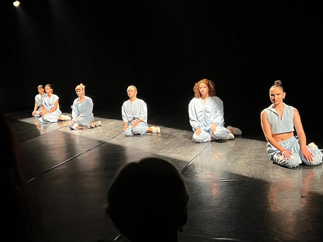
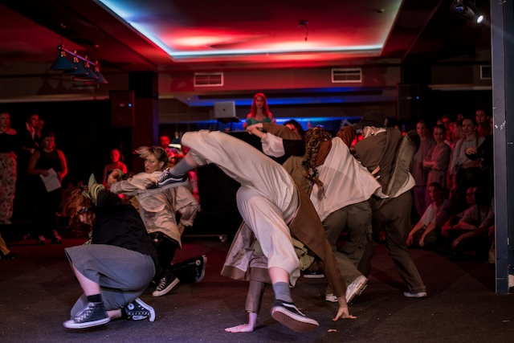
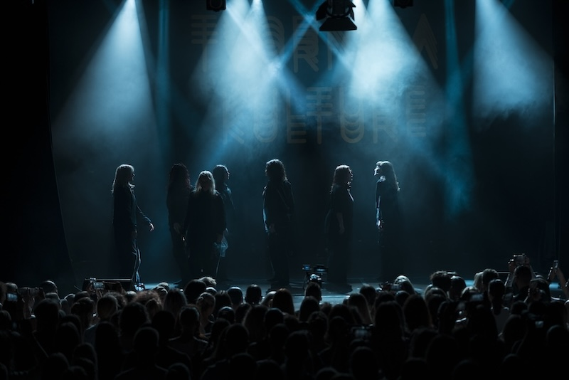
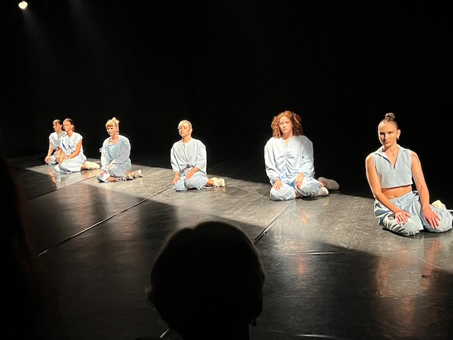
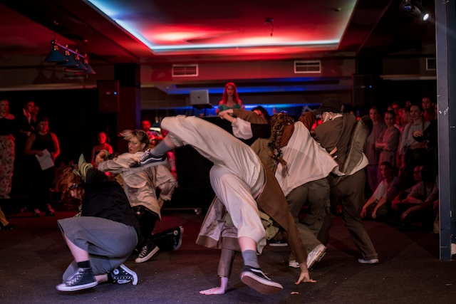
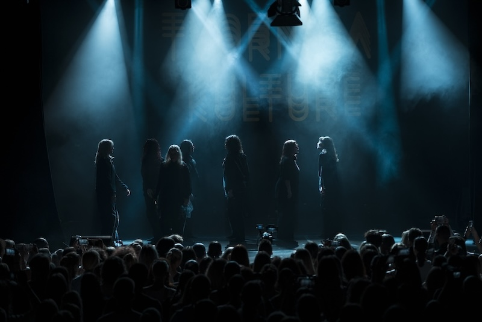
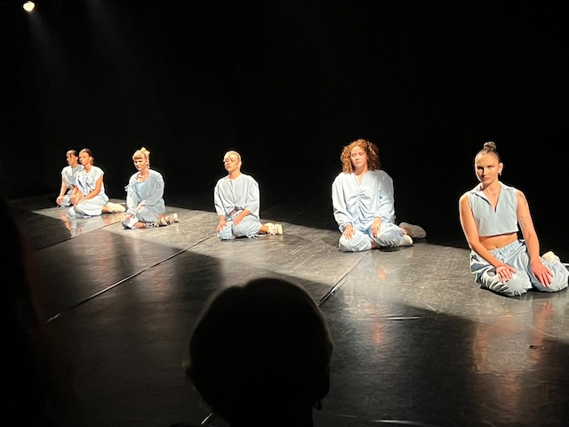
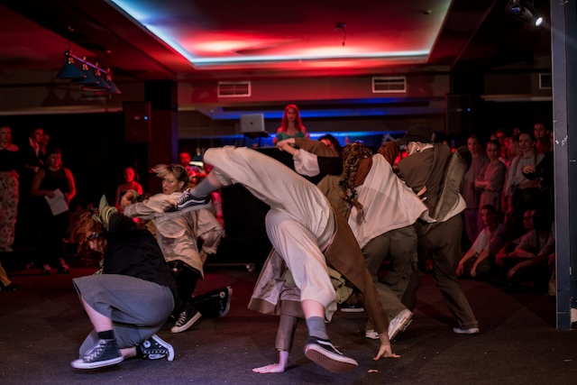
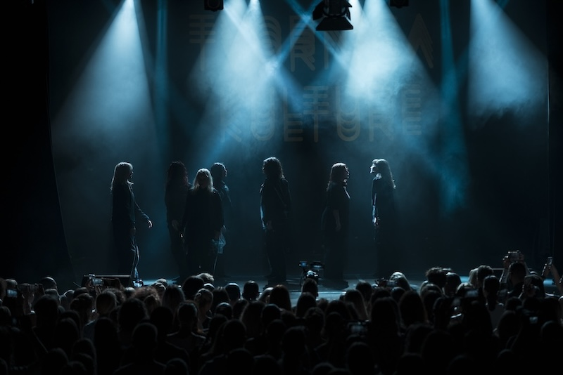

Moja prva ljubav bila je ples. Sa devet godina roditelji su me upisali na hip-hop gdje sam ostala do danas.
Kroz ples upoznala sam doživotne prijatelje, putovala svijetom i gradila sebe kao osobu. Kako sam odrastala
interesi su se proširili, a jedan od njih je bio fotografija. Oduvijek mi je bilo fascinantno kako fotografija
može prenjeti emociju i doživljaj fotografa tj. kao slika može govoriti tisuću rijeći. Nisam fan klubova
i velikih skupina ljudi, više sam za kućna druženja, kavice s prijateljima i šetnje. Jako volim životinje i da se mene
pita posao iz snova bi bio volontiranje u skloništu za orangutane.


